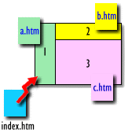

工具列表
在线HTML语法教学
■ 细说HTML标签
在HTML语法中，大致上可以分为：
网页架构 分隔标签 排版标签 字体标签 文字标签 影像标签 背景标签 链接标签 表格标签 序列标签 表单标签 框架标签 其他技巧 4.1 网页架构
<回细说索引 >
<HTML>神州帮忙网网页制作教学 </TITLE>BODY之间则为主要语法所在，也是网页的主要呈现部分。
【标签解说】
以上看到的就是一篇最简单架构的网页。没错，网页其实就是一堆标签（所谓标签就是指被<>包起来的语法） 集合起来的，透过浏览器的消化整理，就便成了美仑美奂的网页了。
简单而言，通常一份完整的网页包含了二个部份：抬头（HEAD）、文件本体（BODY）。也就是各位在上面所看到的<HEAD></HEAD> 以及<BODY></BODY> 。
在抬头的部份<HEAD></HEAD>中，有另一组标签<TITLE></TITLE> 。打在<TITLE></TITLE>这里面的文字会出现在浏览器视窗最上头蓝色部份里，当作一篇网页的主题。
您可能会发现，为什么我一直没提到<HTML></HTML>这一组标签，嗯！因为它可有可无。这一组标签是告诉浏览器说：我是一份HTML文件喔！也就是说它是一个网页的格式啦！通常都包在网页的最上下两端，将所有的原始码都包起来。
4.2 分隔标签
<回细说索引 >
【文字上的分隔标签】
或许你已经发现这个问题了：天啊！我不是在记事本里排版排得很漂亮，为何透过浏览器看起来一切都走了样？对啊！别太讶异，在网页的编排里，并不像汉书或WORD一样，只要拼命按Enter键或空白键，便能完成分段或分行，因为，HTML语言是不认识我们所谓的Enter键或空白键，所以不管您按了多少次的空白或Enter，浏览器都会当作没看见啦！
使用方法： 强制断行标签 <br> 、强制分段标签 <p>
标签解说： 我们在写文章时，有时候在特定的地方会强迫断行（<br>），或是在写完某一段的时候便会分段（<p>），写网页也一样，而且更需要断行及分段的功能，以免整个网页看起来乱糟糟的。
使用范例：
原始码
呈现结果
这是一个断行的范例<br>看出来了吗？
这是一个断行的范例
这是一个分段的范例<p>基本上他会比断行还多空出一行
这是一个分段的范例
基本上分段会比断行还多空出一行
【分隔线标签】
使用方法： 上一段文字内容 <hr> 下一段文字内容
标签解说： 利用<hr> 这个标签便可产生一条横分隔线。另外，其有些属性分别说明如下：
使用范例：
一般用法
尚未加任何属性。
原始码
普通分隔线<hr>
呈现结果
普通分隔线
颜色属性
用法：<hr
color="颜色码或颜色名称">
原始码
橘色分隔线<hr
color="#ff8000">
呈现结果
橘色分隔线
宽度属性
用法：<hr
width="宽度">，其单位为px（像素），宽度亦可用百分比来作设定，如50%即意为宽度占萤幕50%。
原始码
宽度为240px的分隔线<hr
width="240">
呈现结果
宽度为240px分隔线
厚度属性
用法：<hr
size="厚度">
原始码
厚度为5的分隔线<hr
size="5">
呈现结果
厚度为5分隔线
位置属性
用法：<hr
align="水平对齐位置">，其设定值有三个，也就是置左align="left"、置中align="center"、置右align="right"
原始码
靠右的分隔线<hr
align="right">
呈现结果
靠右的分隔线
阴影属性
用法：<hr
noshade>，无设定值，只要将 noshade 加入即可，通常会配合颜色设定，效果较佳。
原始码
实心分隔线（无阴影）<hr
noshade>
呈现结果
实心分隔线（无阴影）
4.3 排版标签
<回细说索引 >
【文字置左、置中、置右】
使用方法： 老实说，刚刚我们学过的分段标签<p>再加上一些简单的属性设定，就可以让其整个文字段落置左、置中或置右了，就如下表所示：
原始码
呈现结果
<p align="left">文字靠左</p>
文字靠左
<p align="center">文字置中</p>
文字置中
<p align="right">文字靠右</p>
文字靠右
标签解说： 嗯！秘诀就在于“align=对齐位置 ”而已啦！align是分段标签<p>的属性之一，这个属性将来会常常在不同标签中看到，它的功能是专门在设定“水平对齐位置”，其常见的设定值有三个，也就是置左（align="left"） 、置中（align="center"） 、置右（align="right"） 。
【置中标签】
使用方法： <center> 这是置中 </center>
标签解说： 这个标签是最常用到的标签了，除了文字，对于图片、表格，任何可以显现在网页上的东西都可以置中喔！
使用范例：
原始码
呈现结果
<center>这是最中间</center>
这是最中间
【向右缩排标签】
使用方法： <blockquote> 要缩排的文字 </blockquote>
标签解说： 利用<blockquote></blockquote> 这个标签可以将其包起来的文字，全部往右缩排。而且加一组标签，往右缩排一单位，加两组标签，往右缩排两单位，依此类推。
使用范例：
原始码
呈现结果
<blockquote>缩排1单位</blockquote>
缩排1单位
<blockquote><blockquote>缩排2单位</blockquote></blockquote>
缩排2单位
【保存原始格式标签】 强烈推荐！
使用方法： <pre> 文字内容 <pre>
标签解说： 利用<pre></pre> 这个标签可以将其包起来的文字排版、格式，原封不动的呈现出来。算是相当好用的标签之一。
使用范例：
原始码
呈现结果
<pre>
文 字
格 式
4.4 字体标签
<回细说索引 >
【标题标签】
使用方法： <h1> 标题内容 </h1>
标签解说： 标题的大小一共有六种，两个标签一组，也就是从<h1>到<h6>，<h1>最大，<h6>最小。使用标题标签时，该标签会将字体变成粗体字，并且会自成一行。
使用范例：
原始码
呈现结果
<h1>标题一</h1>
标题一
<h2>标题二</h2>
标题二
<h3>标题三</h3>
标题三
<h4>标题四</h4>
标题四
<h5>标题五</h5>
标题五
<h6>标题六</h6>
标题六
【设定字体大小标签】
使用方法： <font
size=3> 文字内容 </font>
标签解说： 标题的大小一共有七种，也就是<font size=1>（最小）到<font
size=7>（最大），另外，还有一种写法：<font
size=+1> 文字内容 </font> ，其意思就是说：比预设字大一级。当然也可以 font
size=+2（比预设字大二级），或是 font size=-1（比预设字小一级），以一般而言，预设字体多为 3。
使用范例：
原始码
呈现结果
<font size=1>字体一</font> 或是
字体一
<font size=2>字体二</font> 或是
字体二
<font size=3>字体三</font> 或是
字体三
<font size=4>字体四</font> 或是
字体四
<font size=5>字体五</font> 或是
字体五
<font size=6>字体六</font> 或是
字体六
<font size=6>字体七</font> 或是
字体七
【字型变化标签】
使用方法： <b> 文字 </b>
标签解说： 在文字标签里，对于文字的格式也有相当多的变化，如粗体、斜体...等，此外，也定义了一些现成的格式供编者使用，如‘强调’、‘原始码’...等，当然，这只是方便您参考用，并无强迫说遇到原始码就要加上‘原始码’的标签。
使用范例：
原始码
呈现结果
<b>粗体</b>
粗体
<i>斜体</i>
斜体
<u>底线</u>
底线
<sup>上标</sup>
上标
<sub>下标</sub>
下标
<tt>打字机</tt>
打字机
<blink>闪烁</blink>（ie没效果）
闪烁
<em>强调</em>
强调
<strong>加强</strong>
加强
<samp>范例</samp>
范例
<code>原始码</code>
原始码
<var>变数</var>
变数
<dfn>定义</dfn>
定义
<cite>引用</cite>
引用
<address>所在地址</address>
所在地址
【文字颜色设定】
使用方法： <font
color="#fefecb"> 文字颜色 </font>
标签解说： 文字也可以设定 颜色喔！至于颜色有哪些....这....哪天我心血来潮再来做个色彩对应表吧！
使用范例：
原始码
呈现结果
<font color="#ff0000">红</font>
红色的字喔！
<font color="#ff8000">橙</font>
橙色的字喔！
<font color="#ffff00">黄</font>
黄色的字喔！
<font color="#00ff00">绿</font>
绿色的字喔！
<font color="#0080ff">蓝</font>
蓝色的字喔！
<font color="#0000a0">靛</font>
靛色的字喔！
<font color="#8000ff">紫</font>
紫色的字喔！
<font color="#000000">黑</font>
黑色的字喔！
<font color="#c0c0c0">灰</font>
灰色的字喔！
4.5 文字标签
<回细说索引 >
【文字字型设定】
使用方法： <font
face="字型名称"> 文字 </font>
标签解说： 网页上也可以使用字型喔！唯一的一个限制是：对方也要有该字型！否则看到的仍然还是宋体。另外要说明的是，这个标签并无法保证在每个浏览器上都能正常的显现，不过这并没有关系，看不到特殊的字型时，浏览器仍会以宋体来显示，所以不用怕会一团乱！
另外，如果您的网页中有加上这一行叙述<meta http-equiv="content-type"
content="text/html;charset=big5">（指定网页的语言格式，以后我会解释），那么，netscape可以正确显示出中文，但英文无反应。若没有加该行，那么英文会正确显示，但中文却仍是宋体。至于
ie 系列，均能正常显示。
使用范例：
原始码
呈现结果
<font face="楷体_GB2312">楷体_GB2312</font>
楷体_GB2312
<font face="华康俪中黑">华康俪中黑</font>
华康俪中黑
【特殊字元】
使用方法：
标签解说： 很多特殊的符号是需要特别处理的，比如说" < "、" >
"这两个符号若想要呈现在网页上是没有办法直接打" < "的，要呈现" <
"必须输入编码表示法：“<”，常用的如下：
使用范例：
原始码
呈现结果
( 代表一个不断行空白)
<
<
>
>
&
&
"
"
【设定文字内定值大小】
使用方法： <basefont
size="1~7">
标签解说： 这个标签可以改变文字大小的内定值，直接加在<body>标签之后就行了。一般而言，若是没有特别设定，文字大小内定值预定值为3。
4.6 影像标签
<回细说索引 >
【影像标签】
在使用影像标签时有两件事值得注意一下，一是档名，二是路径。首先要注意的就是，档名是否正确以及大小写是否一致！图档名称不正确，任电脑再厉害也找不到您要的图，档名大小写不一致，如Image.gif、image.gif、image.GIF在自己的电脑中看都能正确的显示，但是一但传到网路上去时，因为系统不一样的关系（电脑伺服器的作业系统可比个人用电脑的作业系统严谨多了）就变成三个不一样的档案了，所以，可别忽略档名大小写不一致的影响。
另外一个就是路径问题了，这个问题也不难，我们在稍后会提到。我们先来看看影像的标签如何写。
使用方法： <img src="boy.gif"
alt="本站特约模特儿" align=right border=0 hspace=2 vspace=2 height=56
width=32>
标签解说： 目前常见的网页图形格式有两种就是gif及jpg两种格式。gif格式只有256色，不过色彩比较鲜艳干净漂亮，适合电脑美工图案。而jpg格式的图案是全彩失真压缩，比较适合一大堆颜色的图片，如照片就较适合用jpg格式来呈现。
使用范例：
基本用法
用法：<img
src="图档名称、路径">
原始码
<img
src="http://tools.kqiqi.com/logo/logo2.gif">嗨！我是本站的模特儿喔！
呈现结果
嗨！我是本站的模特儿喔！
长宽设定
用法：<img
src="图档" height="高度" width="宽度">
原始码
<img
src="http://tools.kqiqi.com/logo/logo2.gif">
呈现结果
加上说明
用法：<img
src="图档" alt="说明文字">
原始码
<img src="http://tools.kqiqi.com/logo/logo2.gif" alt="本站特约模特儿" >移到图上看看。
呈现结果
移到图上看看。
图片位置
用法：<img
src="图档" align="位置">
原始码
<img
src="http://tools.kqiqi.com/logo/logo2.gif" align=right >嗨！我往右边靠！
呈现结果
嗨！我往右边靠！
原始码
<img
src="http://tools.kqiqi.com/logo/logo2.gif" align=left >嗨！我往左边靠！
呈现结果
嗨！我往左边靠！
原始码
<img src="http://tools.kqiqi.com/logo/logo2.gif"
align=top >文字对齐我头顶！
呈现结果
文字对齐我头顶！
原始码
<img
src="http://tools.kqiqi.com/logo/logo2.gif" align=bottom >文字对齐我脚底！
呈现结果
文字对齐我脚底！
原始码
<img
src="http://tools.kqiqi.com/logo/logo2.gif" align=middle >文字对齐我中间！
呈现结果
文字对齐我中间！
原始码
<img
src="http://tools.kqiqi.com/logo/logo2.gif" align=absmiddle >文字对齐我绝对中间！
呈现结果
文字对齐我绝对中间！
边框设定
用法：<img
src="图档" border="边框粗细">
原始码
<img src="http://tools.kqiqi.com/logo/logo2.gif" border="4" >
呈现结果
左右间距
用法：<img
src="图档" hspace="离左右物件的距离">
原始码
左边的字<img src="http://tools.kqiqi.com/logo/logo2.gif"
hspace="15" >右边的字
呈现结果
左边的字右边的字
上下间距
用法：<img
src="图档" vspace="离上下物件的距离">
原始码
上面的字<br><img
src="http://tools.kqiqi.com/logo/logo2.gif" vspace="15" ><br>下面的字
呈现结果
上面的字
由于此网页有用css控制版面图文，故在netscape下观看，会稍有不正确。
【网页影像重要观念】
关于路径： 现在我们来谈谈图片路径的事，路径不对，不管您的网页名称写的多正确也没用，因为浏览器无法寻着您的路径去找到该有的图片，所以，我们来看看该如何正确的使用路径。有些人并不喜欢将网页及图通通放在同一个目录下，比如说有人将图档全放在c:\images里，而网页档放在c:\demo里，这样子的话，我们该如何正确的写图片的路径呢？我将几种常见的情形整理成下表：
html档的位置
图档的位置
写法
情形说明
c:\demo
c:\demo
<img src="logo .gif">
图文均在同一目录
c:\demo
c:\demo\images
<img src="images /logo .gif">
图在网页下一层目录
c:\demo
c:\
<img src=" ../logo .gif">
图在网页上一层
c:\demo
c:\images
<img src="../images /logo .gif">
图文在同一层但不同目录
或许有人看到不明就理，我来说明一下，“../”是回到上一层目录的意思。“images/”则是进入下一层目录image之意，而“../ images/”的意思就是，回到上一层目录，然后再进入目录images中。以上我们使用的均为“相对路径 ”的概念。
影像单位： 或许您会常常看到px这个单位，没错，这是我们在制作最常用的一个单位了。这个单位完整的写法是“pixels”，我们称之为“像素”。像素，是萤幕上的一个小光点，然而这一小光点的大小，并非是固定的，举个例子而言，萤幕本身十五寸，不会因为你的任何设定而变成十七寸。但是，其解析度是可以改变的，我们常见的解析度有以下几种：“640
×480”、“800 ×600”、“1024 ×768”。举其中之一的640
×480来说，其代表的就是在萤幕上有宽640个光点，高有480光点，若是我们将解析度调整为800
×600其宽势必要从640变成800个光点，也因此，该光点便会变小一点，所以，我们看起来就会觉得解析度调高后，萤幕内的东西，变得小小的，很精致，那就是因为光点变小的原因。
影像格式： 网页用的图档目前只有gif格式（即副档名为gif的图档，如：bg.gif）以及jpg格式（即副档名为jpg的图档，如：bg.jpg）为一般的浏览器所接受。其他如bmp格式或是pcx格式都是无法在网页上使用的，若非得要用，那就利用影像绘图软体来作格式的转换吧！
图档范例
说明
gif格式的图形只能以256个颜色显示，虽然其色彩较少，但颜色鲜艳亮丽，若是图形颜色不多，用gif格式存档会较漂亮。
jpg格式的图形是以全彩显示，适合用在相片或是渐层颜色的图片上，压缩比例以75%为适中。
4.7 背景标签
<回细说索引 >
【背景标签】
说穿了，背景标签只有<BODY>这个标签，其余的效果，只要加上一些简单的属性便可做到。
使用方法： <body bgcolor="#ffffff"
background="bg.jpg">
标签解说： 这个标签其实应该老早就要讲了，毕竟它是构成网页不可或缺的基本要素之一。我们背景颜色或图片的设定以及链接字体的颜色，通通都放在<body>这标签里面。我就其属性来一一解说：
背景颜色
用法：<body
bgcolor="颜色码">
原始码
<html><body bgcolor="#f9e6a2" >
这里是本文区
</body>
背景图案
用法：<body
background="图档名称、路径">
原始码
<html><body bgcolor="#f9e6a2" background="bg.jpg" >
这里是本文区
</body>
【内文、链接文字颜色设定】
使用方法： <body text="#000000"
link="#0000ff" vlink="#ff00ff" alink="#ff0000>
标签解说： 用字体标签中的颜色属性，可以设定文字的颜色，不过，却没有提到文字的颜色内定值该如何修改，这个<body>标签中，便有设定内文、链接等文字的颜色内定值功能。用法如下：
内文颜色
用法：<body
text="颜色码">
原始码
<html><body text="#0906a2" >
这里是本文区
</body>
链接颜色
用法：<body
link="颜色码">
原始码
<html><body link="#ff6600" >
<a href="index.htm">链接文字</a>
</body>
链接时颜色
用法：<body
alink="颜色码">
原始码
<html><body alink="#0099ff" >
<a href="index.htm">链接中文字</a>
</body>
已链接颜色
用法：<body
vlink="颜色码">
原始码
<html><body vlink="red" >
<a href="demo1-10-6.htm">链接文字</a>
</body>
4.8 链接标签
<回细说索引 >
【WWW链接标签基本概念 】
链接基本概念： 一般而言，所谓链接就是，在网页中有些字会有特别的颜色，而且字的底下会有条线，当游标移到那些字上时，会变成手指形状，按下去，则会连到别的文章或网站，就像这样 （以上这段是给超级新手看的...） 。
扯到链接，最基本来看有‘内部链接’ 及‘外部链接’ ，所谓‘内部链接’就是自己网站间网页的链接，至于外部链接我们稍后再来讨论。
要了解内部链接，首先必须先了解一下这两种东西，一个是‘相对路径’ ，一个是‘绝对路径’ 。
现在假设一个情形：我们在自己的电脑里设计网页，所有网页相关的档案我们通通放在 c:\www 里面，现在假设 c:\www
里面目前有 index.htm 、 text1.htm 、 p1.gif 、 p2.gif 这四个档案。ok！
现在我们想在 index.htm 里面设一个链接，能够按一下就连到
text1.htm，那我们该怎么做呢？基本上，有两种方式可以做到，在 index.htm 里面加上下面任一叙述：
<a href="/c|/www/text1.htm ">
这就是‘绝对路径’
<a href="text1.htm ">
这就是‘相对路径’
瞧出什么端倪了没有？嗯嗯....没错，‘绝对路径’要给电脑一个非常详尽的位置，让电脑寻着这路径去找到档案。而‘相对路径’就简单多啦！如果没有特别指定，他就会直接在
index.htm 的所在目录 下找，也就是在 c:\www
底下去找text1.htm。
如果说，今天我们将 c:\www 里所有的档案都上传到网路上的网页伺服器（总不能做好了只给自己看吧！） ，且该伺服器是别人的电脑，而非你自己架设的主机，那么问题就来了！你猜，哪一种链接会出问题？呵呵...答案是‘绝对路径’，您猜对了吗？
为什么说‘绝对路径’会出问题呢？因为，当您将档案上传到网路上时，您的整个网页目录架构一定会变，到时候，电脑可能找不到 c:\
（尤其是unix系列的主机） 更可能找不到 www 这目录（有些会规定要放在特定的目录下才能显示网页） ，所以说，没事的话，尽量用‘相对路径’来作链接吧！好写又不容易出错。
另外一个情形是：为了整理方便，有些网友喜欢将图档通通放到同一个目录下，如：c:\www\gif\ 底下放进了p1.gif 、
p2.gif两个图，而index.htm 、 text1.htm 依旧在 c:\www 底下。现在我们想在 index.htm
下设个链接到 p1.gif 这图档（链接不限于只能连html档，图档、文字档均可） ，那我们又该如何来使用‘相对路径’呢？他们又不在‘同一个目录’下...？
<a href="/c|/www/gif/p1.gif ">
这是‘绝对路径’的写法
<a href="gif/p1.gif ">
这是‘相对路径’的写法
如何？不难吧！（只是字有点多，看到脑子发胀！）
总整理： 很乱吗？嗯...看看这表，或许会清楚些。
相对路径表示方式 代表链接位置
<a href="text1.htm">
text1.htm在目前的目录中（就例子而言，就是在c:\www中）
<a href="docs/text1.htm">
text1.htm在名为docs的次目录 中（就本例而言，就是在c:\www\docs中）
<a href="../text1.htm">
text1.htm在目前目录的上一层目录中（就本例而言，就是在c:\底下了）
【网页内部的链接 】
使用方法：
先在欲链接处作记号： <a
name="here1"> 这里是你想链接的点 </a>
设定链接： <a
href="#here1"> 链接 </a>
标签解说： 有时候，当某页的内容很多时，我们可以利用网页的内部链接，来使使用者快速的找到资料。其原理不过是：在欲链接处做个记号（网页的任何地方都可以喔！） ，然后，链接时就寻这记号，就可以快速找到资料。很简单吧！
使用范例：
范例
第一步骤
第二步骤
www链接标签基本概念 <a
name="m1">欲链接的位置</a>
<a
href="#m1">www链接标签基本概念</a>
网页内部的链接 <a
name="m2">欲链接的位置</a>
<a
href="#m2">网页内部的链接</a>
网页外部的链接 <a
name="m3">欲链接的位置</a>
<a
href="#m3">网页外部的链接</a>
【网页外部的链接 】
标签解说： 链接到外面去，可以扩充您网站的实用性及充实性，也正因这功能，才造就了www五彩缤纷的世界。由于网路上的服务五花八门，所以不同的服务有不同的链接方法，我将之整理在下表。
使用范例：
网站链接
好站 <a href="http://tools.kqiqi.com ">好站</a>
电子邮件链接
写情书给我 <a href="mailto:tool@ jzba.com">写情书给我</a>
ftp链接
下载档案 <a href="ftp:// tools.kqiqi.com">下载档案</a>
news链接
seednet
news服务 <a href="news:news. tool.la">seednet
news服务</a>
gopher链接
seednet gopher服务 <a href="gopher://tools.kqiqi.com/ ">seednet
gopher服务</a>
bbs链接
seednet gopher服务 <a href="telnet://bbs.tool.la/ ">seednet
bbs服务</a>
【链接标签的参数】
使用方法： 在链接后面加入 target=_参数
标签解说： 链接的参数并不多，常见的大概就属 target 这参数了，target
的意思是‘目标’，也就是网页链接的指向目标，这参数在框窗（frame）里尤为重要！
使用范例：
target=框窗名称 ：
target=_blank ：
target=_parent ：
target=_self ：
target=_top ：
4.9 表格标签
<回细说索引 >
【网页中的表格观念】
举个例子来说，如果今天我们要做一个3栏2列的表格，在WORD中，只要设定表格为3栏、2列就完成了，不过，在网页中做一个3栏2列的表格，可是要分成好几个步骤的，第一个步骤，利用<TABLE></TABLE>标签告诉电脑我要做一个表格；第二个步骤，利用一组<TR></TR>标签先做一个横列，然后在横列中利用三组<TD></TD>标签再分出三栏；第三个步骤，重复第二个步骤，再做一横列然后再分三栏，如此才能得到一个3栏2列的表格。听不太懂吗？没关系，以下咱们就来慢慢的看个仔细：
首先我们来看一个最简单的表格：
原始码
呈现结果
<TABLE BORDER=1><TR> <TD> 1</TD> </TR>
利用<TABLE>这个标签来告诉电脑，这是一个表格，至于 BORDER=1 这参数是设定此表格的框线粗细为
1。一组<TR></TR>是设定一横列的开始。一组<TD></TD>则是设定一个栏位。当然，文字就是要摆在这里面。
现在我们再来增加二个格子：
原始码
呈现结果
<TABLE BORDER=1><TR> <TD> 1</TD><TD> 2</TD><TD> 3</TD> </TR>
看见没有，<TR></TR>没有增加，<TD></TD> 却增加了二组。那如果我要再加上一列呢？很简单，就像这样：
原始码
呈现结果
<TABLE BORDER=1><TR> <TD> 1</TD><TD> 2</TD><TD> 3</TD> </TR> <TR> <TD> 4</TD><TD> 5</TD><TD> 6</TD> </TR>
【合并表格栏位】
并非所有的表格都是规规矩矩的只有几栏、几列而已，有时候，我们还会希望能够“合并栏位”，让表格更美观、更实用一点，而谈到“合并栏位”，我们就必须知道，合并的方向有两种：一种是上下合并（也就是横列间的合并），一种是左右合并（也就是直栏间的合并），这两种合并方式各有不同的属性设定方法。
左右栏位合并：基本上，您的表格已经学会��！接下来，咱们就来看看，如何将 1、2、3 格通通合并变成一大格：
原始码
呈现结果
<TABLE BORDER=1>COLSPAN=3 >1</TD></TR>
您应该会发现，怎么2、3都消失了？只剩下1，而且该栏的<TD>标签还多了一个陌生的脸孔COLSPAN="3"，没错，这就是“左右栏位合并”的属性，COLSPAN="3"的意思就是“这个栏位左右横跨了3个栏位”，也正因如此，本来的两个<TD>都可以省掉了，因为都被并掉了嘛！
上下栏位合并：学会了左右合并！接下来，咱们就来看看，如何上下合并，将
1、4格通通合并变成一大格：
原始码
呈现结果
<TABLE BORDER=1>ROWSPAN=2 >1</TD><TD>2</TD><TD>3</TD></TR>
有了上一次的经验后，我们就知道，要合并栏位就一定有些栏位会被“牺牲”掉（也就是那些被合并的栏位啦！），这次我们要“上下合并”，我们将1与4合并成一个栏位，那么被牺牲的是哪一个栏位呢？没错就是下面那一个倒楣的4，我们看看上图，果然4已经删掉了，而在1的<TD>标签中则多了个生面孔ROWSPAN，这就是“上下栏位合并”的属性，ROWSPAN=2的意思就是“这个栏位上下连跨了2个栏位”，其结果如下：
【表格栏位对齐位置设定】
我可以自己设定表格的大小吗？当然可以，您可以自由设定表格的“宽”及“高”喔！我们来制作一个宽100、高60的表格，做法如下：
原始码
呈现结果
<TABLE WIDTH="100"
BORDER="1" HEIGHT="60" >
哎呀！怎么 1 老是在表格的左边呢？可以弄到中间吗？当然可以，只要在<TD>加入
ALIGN=CENTER 这参数即可：
原始码
呈现结果
<TABLE WIDTH="100" BORDER="1"
HEIGHT="60">ALIGN=CENTER >1</TD></TR>
此外，利用 ALIGN=RIGHT可以让表格中物件置右、利用
ALIGN=LEFT可以让表格中物件置左（预设值），至于为什么要加在<TD>中呢？因为，<TD>是一个栏位的意思，我们要指定在这栏位中的东西要置中或置左置右，就必须将ALIGN加在<TD>中。
既然可以置中，那么也可以控制表格内文字靠上方、靠下方吗？可以的，只要利用
VALIGN=TOP 这种属性即可让表格内物件靠上方对齐。
原始码
呈现结果
<TABLE WIDTH="100" BORDER="1"
HEIGHT="60">VALIGN=TOP >1</TD></TR>
利用VALIGN=MIDDLE可以让表格中物件垂直置中（预设值），VALIGN=BOTTOM可以H让表格中物件靠下方。
【表格背景、底色设定】
那么表格可以设定底色吗？可以的不但表格可以，您也可以指定某栏或某列的颜色，方法和加背景颜色一样，利用BGCOLOR="颜色码"就行了。底下是指定整格表格背景颜色的方法：
原始码
呈现结果
<TABLE BORDER="1" BGCOLOR=#FFCC33 >
将BGCOLOR="颜色码"加在<TR>中，可以指定“一列”的背景颜色：
原始码
呈现结果
<TABLE BORDER="1" >BGCOLOR=#FFCC33 ><TD>1</TD><TD>2</TD></TR>
将BGCOLOR="颜色码"加在<TD>中，可以指定“一栏”的背景颜色：
原始码
呈现结果
<TABLE BORDER="1" >BGCOLOR=#FFCC33 >1</TD><TD>2</TD></TR>
表格除了可以设定底色外，也可以用图片来作背景吗？当然可以，方法一样简单，只要将BACKGROUND="图片名称"加到表格中就行了。和表格背景颜色一样，不但表格可以设定背景图片，您也可以指定某栏或某列的背景图片：
原始码
呈现结果
<TABLE BORDER="1" BGCOLOR=#FFCC33 >
将BACKGROUND="图片名称"加在<TD>中，可以指定“一栏”的背景颜色：
原始码
呈现结果
<TABLE BORDER="1">BGCOLOR=#FFCC33 >1</TD><TD>2</TD></TR>
【表格框线设定】
如何设定表格粗细？只要利用BORDER="粗细值"就行了。
原始码
呈现结果
<TABLE BORDER=5 >
如何设定表格颜色？只要利用BORDERCOLOR="颜色码"就行了。
原始码
呈现结果
<TABLE BORDER="5" BORDERCOLOR="#0080FF" >
另外，我们也可以设定表格的阴影、亮面颜色，让表格看起来更有立体感喔！只要利用
BORDERCOLORLIGHT="#颜色码"（亮面设定）
BORDERCOLORDARK="颜色码"（暗面设定）就行了。
原始码
呈现结果
<TABLE BORDER="5" BORDERCOLOR="#0080FF" BORDERCOLORLIGHT="#62B0FF"
BORDERCOLORDARK="#004B97" >
【表格栏距设定】
我们可以利用CELLPADDING属性自由设定表格内文距离格线的距离，这个属性很好用，保持适当的距离，看起来比较舒服。一般而言内定值为2，不过我建议设定为4比较漂亮。
原始码
呈现结果
<TABLE BORDER="1" CELLPADDING="10" >
我们可以利用CELLSPACING属性设定表格栏位格线之间的距离。一般而言内定值为2，不过我通常习惯设为 0
。
原始码
呈现结果
<TABLE BORDER="1" CELLSPACING="5" >
4.10 序列标签
<回细说索引 >
【无序标签】
序列标签基本上可分为两种，一种是“无序条列”，一种是“有序条列”。所谓“无序条列”当然就是意指各条列间并无顺序关系，纯粹只是利用条列式方法来呈现资料而已，此种无序标签，在各条列前面均有一符号以示区隔。至于“有序条列”就是指各条列之间是有顺序的，从1、2、3…一直延伸下去。
我们先来看看“无序列表标签”如何使用：
原始码
呈现结果
<UL>
其中<UL>标签即为“无序列表标签”，每增加一列内容，就必须加一个<LI>。
前面的符号一定是要圆形的吗？不，我们可以加入TYPE="形状名称"属性来改变其符号形状，一共有三个选择：DISK（实心圆）、SQUARE（小正方形）、CIRCLE（空心圆）三种（由于本页使用CSS故仅于Netscape看得出效果。） ：
原始码
呈现结果
<UL TYPE="CIRCLE" >
【有序标签】
接下来，我们来看看“有序列表标签”如何使用：
原始码
呈现结果
<OL>
姓名：张三
生日：12/13
星座：射手座
其中<OL>标签即为“有序列表标签”，每增加一列内容，就必须加一个<LI>。
和无序列表标签一样，我们也可以选择不同的符号来显示顺序，一样是用TYPE属性来作更改，一更有五种符号：1（数字）、A（大写英文字母）、a（小写英文字母）、I（大写罗马字母）、i（小写罗马字母）等五种：
原始码
呈现结果
<OL TYPE="A" >
姓名：张三
生日：12/13
星座：射手座
另外，我们亦可指定序列起始的数目，其方法如下：
原始码
呈现结果
<OL START="8" >
姓名：张三
生日：12/13
星座：射手座
【定义列表标签】
接下来我们要说明的这个标签，是“定义列表标签”也是属于序列标签之一。我们先来举个例子，我们常常会在文章中看见这样的格式：
CSS（Cascading style sheet）
CSS是由W3C于1996年12月所公布的一项新技术，什么叫做Cascading style
sheet？简单说来他是一种具有阶层性的形式设定，能够让网页设计者在设计网页时，对于网页上的任何物件均有更佳的操控性…
我们先来看看“定义列表标签”如何使用：
原始码
呈现结果
<DL>
小标题
标题的内容说明
4.11 表单标签
<回细说索引 >
【表单的用途】
对于一般的网页设计初学者而言，表单功能其实并不常用，因为表单通常必须配合着CGI、JAVA
Script程式或是ASP程式来运作，不然表单单独存在的意义并不大。不过，一旦有机会将表单运用到网页中时，您的网页将摆脱单向呈现，而开始迈入和使用者互动的阶段喔！
本单元纯粹以介绍各式表单为主，至于一些CGI或ASP观念在此我就不提出了，因为提供零碎的观念，倒不如去看看专门介绍CGI的书籍来的妥当。
【各种输入类型】
文字输入列 ：每个表单之所以会有不同的类型，原因就在于TYPE="表单类型"设定的不同而已，我们就先来看看第一个类型：文字输入列。文字输入列的形态就是TYPE="TEXT，其使用方法如下：
呈现结果
原始码
<FORM>TEXT " NAME="NAME"
SIZE="20">
其有下列可设定之属性：
NAME="名称"，是设定此一栏位的名称，程式中常会用到。
SIZE="数值"，是设定此一栏位显现的宽度。
VALUE="预设内容"，是设定此一栏位的预设内容。
ALIGN="对齐方式"，是设定此一栏位的对齐方式，其值有：TOP（向上对齐）、MIDDLE（向中对齐）、BOTTOM（向下对齐）、RIGHT（向右对齐）、LEFT（向左对齐）、TEXTTOP（向文字顶部对齐）、BASELINE（向文字底部对齐）、ABSMIDDLE（绝对置中）、ABSBOTTOM（绝对置下）等。
MAXLENGTH="数值"，是设定此一栏位可设定输入的最大长度。
单选核取表单 ：利用TYPE="RADIO"就会产生单选核取表单，单选核取表单通常是好几个选项一起摆出来供使用者点选，一次只能从中选一个，故为单选核取表单。
呈现结果
原始码
<FORM>RADIO " NAME="SEX" VALUE="BOY">RADIO " NAME="SEX"
VALUE="GIRL">
其有下列可设定之属性：
NAME="名称"，是设定此一栏位的名称，程式中常会用到。
VALUE="内容"，是设定此一栏位的内容、值或是意义。
ALIGN="对齐方式"，是设定此一栏位的对齐方式，其值有：TOP（向上对齐）、MIDDLE（向中对齐）、BOTTOM（向下对齐）、RIGHT（向右对齐）、LEFT（向左对齐）、TEXTTOP（向文字顶部对齐）、BASELINE（向文字底部对齐）、ABSMIDDLE（绝对置中）、ABSBOTTOM（绝对置下）等。
CHECKED，是设定此一栏位为预设选取值。
复选核取表单 ：利用TYPE=" CHECKBOX
"就会产生复选核取表单，复选核取表单通常是好几个选项一起摆出来供使用者点选，一次可以同时选好几个，故为复选核取表单。
呈现结果
原始码
<FORM>CHECKBOX " NAME="SEX"
VALUE="MOVIE">电影CHECKBOX " NAME="SEX"
VALUE="BOOK">看书
其有下列可设定之属性：
NAME="名称"，是设定此一栏位的名称，程式中常会用到。
VALUE="内容"，是设定此一栏位的内容、值或是意义。
ALIGN="对齐方式"，是设定此一栏位的对齐方式，其值有：TOP（向上对齐）、MIDDLE（向中对齐）、BOTTOM（向下对齐）、RIGHT（向右对齐）、LEFT（向左对齐）、TEXTTOP（向文字顶部对齐）、BASELINE（向文字底部对齐）、ABSMIDDLE（绝对置中）、ABSBOTTOM（绝对置下）等。
CHECKED，是设定此一栏位为预设选取值。
密码表单 ：利用TYPE=" PASSWORD
"就会产生一个密码表单，密码表单和文字输入表单长得几乎一样，差别就在于密码表单在输入时全部会以星号来取代输入的文字，以防他人偷窥。
呈现结果
原始码
<FORM>PASSWORD "
NAME="INPUT">
其有下列可设定之属性：
NAME="名称"，是设定此一栏位的名称，程式中常会用到。
SIZE="数值"，是设定此一栏位显现的宽度。
VALUE="预设内容"，是设定此一栏位的预设内容，不过呈现出来仍是星号。
ALIGN="对齐方式"，是设定此一栏位的对齐方式，其值有：TOP（向上对齐）、MIDDLE（向中对齐）、BOTTOM（向下对齐）、RIGHT（向右对齐）、LEFT（向左对齐）、TEXTTOP（向文字顶部对齐）、BASELINE（向文字底部对齐）、ABSMIDDLE（绝对置中）、ABSBOTTOM（绝对置下）等。
MAXLENGTH="数值"，是设定此一栏位可设定输入的最大长度。
送出按钮 ：通常我们表单填完之后，都会有一个送出按钮以及清除重写的按钮，分别是利用TYPE="
SUBMIT "及TYPE=" RESET "来产生，相当的简单易用。
呈现结果
原始码
<FORM>SUBMIT " VALUE="送出资料">RESET "
VALUE="重新填写">
其有下列可设定之属性：
NAME="名称"，是设定此一按钮的名称。
VALUE="文字"，是设定此一按钮上要呈现的文字，若是没有设定，浏览器也会自动替您加上“送出查询”、“重设”等字样。
ALIGN="对齐方式"，是设定此一栏位的对齐方式，其值有：TOP（向上对齐）、MIDDLE（向中对齐）、BOTTOM（向下对齐）、RIGHT（向右对齐）、LEFT（向左对齐）、TEXTTOP（向文字顶部对齐）、BASELINE（向文字底部对齐）、ABSMIDDLE（绝对置中）、ABSBOTTOM（绝对置下）等。
按钮元件 ：表单中或是JAVA
SCRIPT常会用到按钮来作一些效果，因此，我们可以利用TYPE=" BUTTON "来产生一个按钮，相当简单。
呈现结果
原始码
<FORM>BUTTON " NAME="OK"
VALUE="我同意">
其有下列可设定之属性：
NAME="名称"，是设定此一按钮的名称。
VALUE="文字"，是设定此一按钮上要呈现的文字。
ALIGN="对齐方式"，是设定此一栏位的对齐方式，其值有：TOP（向上对齐）、MIDDLE（向中对齐）、BOTTOM（向下对齐）、RIGHT（向右对齐）、LEFT（向左对齐）、TEXTTOP（向文字顶部对齐）、BASELINE（向文字底部对齐）、ABSMIDDLE（绝对置中）、ABSBOTTOM（绝对置下）等。
隐藏栏位 ：表单中有时有些东西因为某些因素，不想让使用者看到，但因程式需要却又不得不存在，此时，我们就可以利用TYPE="
HIDDEN "来产生一个隐藏的栏位。
呈现结果
原始码
<FORM>HIDDEN " NAME="NOSEE"
VALUE="看不到">
其有下列可设定之属性：
NAME="名称"，是设定此一栏位的名称。
VALUE="文字"，是设定此一栏位的值、文字或意义。
【大量文字输入元件】
有时候我们会希望让使用者输入比较大量的文字，此时，文字输入列就显得不敷使用，因此我们就可以利用<TEXTAREA></TEXTAREA>来产生一个可以输入大量文字的元件，夹在两个标签中的文字会出现在框框中，可作为预设文字。
呈现结果
原始码
<FORM>TEXTAREA NAME="TALK" COLS="20"
ROWS="3"></TEXTAREA>
其有下列可设定之属性：
NAME="名称"，是设定此一栏位的名称。
WRAP="设定值"，是设定此一栏位的换行模式。设定值有三种：OFF（输入文字不会自动换行）、VIRTUAL（输入文字在萤幕上会自动换行，不过若是使用者没有自行按下ENTER换行，送出资料时，也视为没有换行）、PHYSICAL（输入文字会自动换行，送出资料时，会将萤幕上的自动换行，视为换行效果送出）。
COLS="数值"，是设定此一栏位的行数（横向字数）。
ROWS="数值"，是设定此一栏位的列数（垂直字数）。
【下拉式选单】
下拉式选单令整个网页看起来有很专业的感觉，我们只要利用<SELECT
NAME="名称">便可以产生一个下拉式选单，另外，还需要配合<OPTION>标签来产生选项，这样才算完整喔！
呈现结果
您喜欢看书吗？： 非常喜欢 还算喜欢 不太喜欢 非常讨厌
原始码
<FORM>
其有下列可设定之属性：
SIZE="数值"，是设定此一栏位的大小，预设值为1，若是您的选项有四个，然后您将SIZE设成4，那么，下拉式选单便会变成选项方块，将四个选项一起呈现在方块中。
MULTIPLE，是设定此一栏位为复选，可以一次选好几个选项。
4.12 框架标签
<回细说索引 >
【框架的基本概念】
首先，各位先看看右手边这张图，我将利用这张图来作解说，这样子，讲起来可能会清楚一点。 OK！我们可以看见，右边的这个视窗，一共分为 1 、 2 、 3
三个框架，每一个框架，各有其显示的内容分别是a.htm、b.htm、c.htm三个档案。然而左下角的那个 index.htm
是做什么用的呢？
原来，左下角的这个档案
index.htm，就是要告诉电脑，我们要将画面分割成这样，也就是说，所有Frame的标签，其实都只摆在 index.htm
这个档案里 。（当然，不是档名一定要叫做 index.htm
取其他档名也是可以的。）
这样明白了吗？总之，您要分割几个框框，就一定会有几个对应的html档案（假如您要分割100个框框，就要有100个html档就对了。） ，另外，还会多一个档案是来告诉电脑要如何分割的。（也就是例中的
index.htm 档啦！）
【开始分割】
别急、别急，分割视窗可是一门学问，要分割也是要一步一步来的。看看刚刚那例子，想像画面是一个蛋糕，你要怎么割，才能割成那样呢？
原始码
呈现结果
<HTML>
各位会发现，奇怪，在上面的语法中，怎么都没见到<BODY></BODY>熟悉的身影？呵呵...没错，它已经被待会儿要加进去的<FRAMESET></FRAMESET>标签给取代了！也就是说，如果我们要分割画面，就要先用<FRAMESET>标签告诉电脑说：‘喂！我要开始分割了！’ 此时，<BODY>是派不上用场的，所以躲到一旁凉快去了！
现在开始动手割割看��！我们先将画面分成左右两边（左边就是框窗 1 了，右边就暂定为 2 等一下还要分割呢！） ，如下图：
原始码
呈现结果
<HTML><FRAMESET COLS="120,*" > <FRAME SRC="a.htm" NAME="1">
</FRAMESET> </HTML>
在<FRAMESET>中，我们要告诉电脑到底是要左右分（COLS） ？还是上下分（ROWS） 。一开始我们是左右分，所以我们写成<FRAMESET COLS="120,*" > 。COLS="120,*"
就是说，左边那一栏强制定为
120点，右边则随视窗大小而变。除了直接写点数外，我们亦可用百分比来表示，例如COLS="20%,80%"也是可以的。
然后，再将右边的框窗再割成上下两个画面（也就是框窗
2 和 3 了） 。如下图：
原始码
呈现结果
<HTML> <FRAMESET
ROWS="100,*"> <FRAME
SRC="b.htm" NAME="2"> </FRAMESET> </FRAMESET>
看见了没？原本的<FRAME SRC="b.htm" NAME="2">（在第 3 点的语法中） 被另一组<FRAMESET ROWS="100,*"
>所取代了！所以要注意喔！第二组<FRAMESET ROWS="100,*" >是被第一组<FRAMESET
COLS="120,*" >所包围起来的喔！（乱七八糟了对不对？）
呵呵...不知不觉就大功告成了，其实只要将最后完成的那些语法存成 index.htm，然后再准备三个档 a.htm
、b.htm 、c.htm那么就完工��！当然，这是一个最阳春的分割法，我会再将一些进阶的标签在底下一一说明。
【其他标签参数说明】
<FRAMESET COLS="120,*" frameborder=0
framespacing=5>
COLS="120,*" （数字随便您自己调整啦！） ，依此类推，四个以上当然就是四组数字啦！
ROWS="120,*"
frameborder=0
framespacing=5
<FRAME SRC="a.htm" NAME="1"
frameborder=0 scrolling="no" noresize marginhight=2
marginwidth=2>
SRC="a.htm" （如果该网页在不同目录，记得路径要写清楚）
NAME="1"
frameborder=0
scrolling="no"
noresize
marginhight=2
marginwidth=2
【相关用法】
◆ <noframe>
使用方法：<noframe> 请换有支援Frame功能的浏览器 </noframe>
标签解说： 有些浏览器较为老旧，无法显示Frame的功能，因此，就要使用此标签，让这些网友知道，该换换浏览器了。或者，你也可以在这标签中，摆上没有Frame语法的网页标签，那么，没有支援Frame功能的浏览器，便会自动显示没有Frame语法的网页。
◆ target=框窗名称
使用方法：<A HREF="d1-1.htm"
target=3 >显示内容</A>
标签解说： 常常有一个情况是，我想在框窗 1 的地方按下链接，但是希望他的内容出现在框窗 3
中（请参照上面那个图） ，那应该如何写呢？就像上面加个 target=框窗名称 就行啦！
◆ target=_top
使用方法：<A HREF="http://www.kimo.com"
target=_top >奇摩站</A>
标签解说： 有时候，在框窗里会链接到别的站，却发现，新链接的这个站，竟然被框窗包住了，不但难看，而且可能会吃上官司说！所以，这时候你必需加入 target=_top 这个参数，那么，这个新连到的网站，就会重新占据整个萤幕啦！
4.13 其他技巧
<回细说索引 >
■ 网页配色及背景音乐
首先是网页的底色，通常是白白的，要怎么做变化呢？可以做自己的背景图片。
要注意一点，如果背景和文字颜色一样～或者颜色相近，天啊～那谁知道你在写什么呀？最好文字与背景颜色有对比，像敝人当初，网页背景是黑的，字是白的红的，就可以很明显的突显出文字。如果图片中有文字，也要尽量淡化，否则影响内容就不好��！
内容的东西颜色要配的适宜（除非你想要有奇怪的风格），不然像背景大红大红，太刺眼了，有人会想去吗？剩下的就让您自己配配看吧！
然后是音乐，有人喜欢用bgsound标签
<bgsound src="music.mid">
可是用NetScape看就没有声音了最好用embed标签 <embed src="music.mid">
这样就可以正常播放了唷～
■ 首页应有的特质及重要性
About Open Page：打开browser看到网站的第一个部份，有人称之为Open
Page(通常是首页的一半或三分之一)，这个部份应该包含网站的主功能(亦即使用者上这个网站最希望或者最可能做的事)，ex.
一进入Allproducts.com即可看到“Key word search”及“Search by
category”，应该尽量避免让使用者还要使用mouse上下左右拉才能看到他(她)所想要的功能或资讯，有时资讯太多，在不得已的情况下，页面可以往下沿申，但切忌右左划面过大，不符一般人的使用习惯，也会造成列印上的困扰。 主题明确：Open
Page应包含公司Logo、网站主题(最好是一段简短的Slogan，让使用者一看就知道这个网站主要功能或架站目的,ex.
Allproducts.com上的The world's best products directory for volume
buyers) Navigation：让使用者很明确了解他(她)目前在网站的什么地方(或功能)，首页上应该有主要功能的链接，各个icon如果可能的话，尽可能加上一些纯文字的说明及link；至于icon或者link的摆放亦应有其相对应的逻辑，如与整个网站或大架构较为相关的，放在较外层，与目前执行的功能或页面较为相关的link应该放在内层；另外，最好能在首页上提供Site
Map的链接，让使用者可以很快了解网站的架构；所有的link应该把握 intuitive , obvious ,
fast的原则。 Color or
image：对于颜色的采用，应该考虑到该网站的特性及与其它相关网站的区别，特别是首页的颜色配置，应该让使用者感觉很舒服、没有压迫感，但又不失其专业性，但切忌过度追求美感而牺牲其功能性，就公司目前的网站设计理念，应该是功能性的考量优于纯美术的考量，首页的设计最好设定在60k以内，而且不要用太多层的table。
Meta
tag：该部份不会出现在前端的页面上，但网站规划时应该将该部份一并考量，做为网站登录时使用，网站上线时务必将相关资料加入。 其它：首页上应该有service account 及 联络资料
■ Meta Tag 的简介
一般常用的格式如下：
<Title>All Products
Online</title> 这虽说不是meta的一部份，但是也不可忽略，总长度不要超过85个Character
(约10个字)。
<meta http-quive="content-type"
content="text/html; charset=iso-8859-1"> 说明网站的格式及编码方式，另外这个功能也可以拿来说明网站的名称。
<meta name="keyword" contents="关键字一, 关键字二,
关键字三, ….."> 铲明整个网站的关键字，关键字间用逗点隔开，总长度最好不要超过1000个Character
(约44个字)。
<meta name="description"
contents="整个网站的描述…."> 铲明整个网站为何吸引人的地方，可用逗点隔开，总长度最好不要超过200个Character
(约15个字)，若文章真的太长，可以切割成两个部分，较不重要的部分置入下一个Description。
<meta name="robots" content=" ALL, NONE,
INDEX, NOINDEX, FOLLOW, NOFOLLOW"> 此功能是要给搜寻引擎使用的，是要用来告诉Spider哪些网页是要去撷取的或不用去撷取的，一般都设定成All(内定值)。
回到顶部